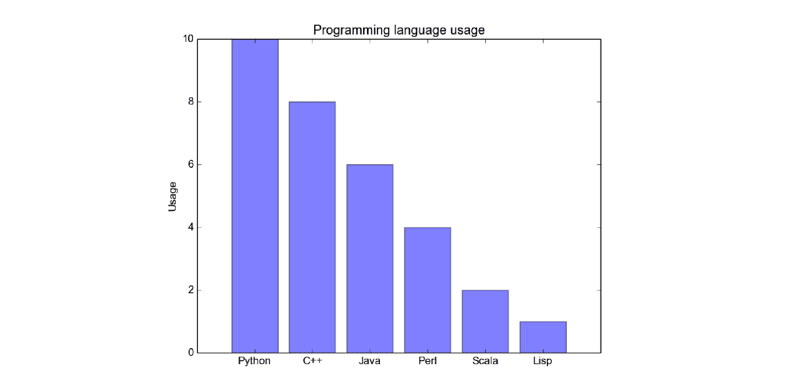

Bar Chart Example
A bar graph can be defined as a graphical representation of data, quantities, or numbers using bars or strips. They are used to compare and contrast different types of data, frequencies, or other measures of distinct categories of data.
Example 1: Sales by Month
Here is a bar graph that shows the sales for a business over the course of a year:
In this example, the x-axis represents the months of the year, and the y-axis represents the total sales in dollars. Each bar represents the sales for a particular month. From this graph, we can see that sales were highest in July and lowest in January.
Example 2: Population by Country
Here is another bar graph that shows the population of the top 5 most populous countries:

In this example, the x-axis represents the countries, and the y-axis represents the population in billions. Each bar represents the population of a particular country. From this graph, we can see that China has the highest population, followed by India, and then the United States.
Bar graphs are a great way to visualize data and can be used for many different types of data. With Bootstrap, it's easy to create beautiful and responsive bar graphs that will look great on any device.